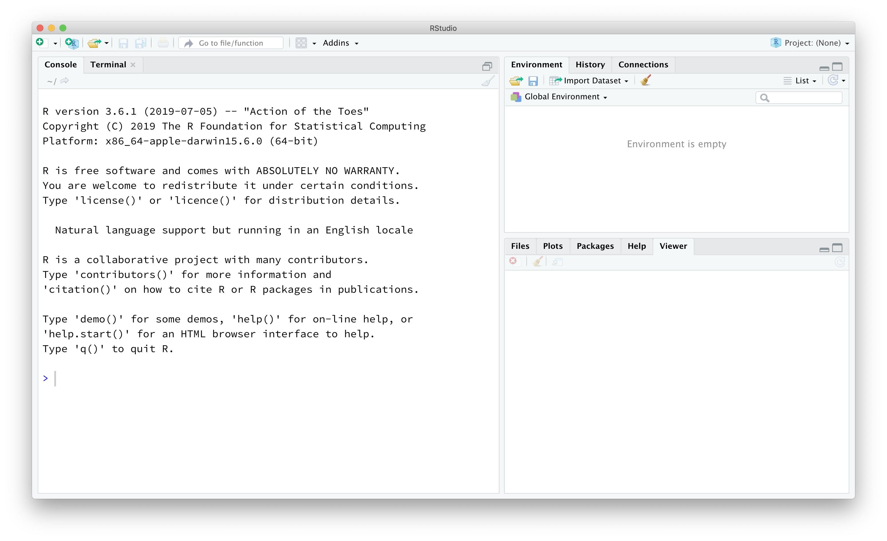
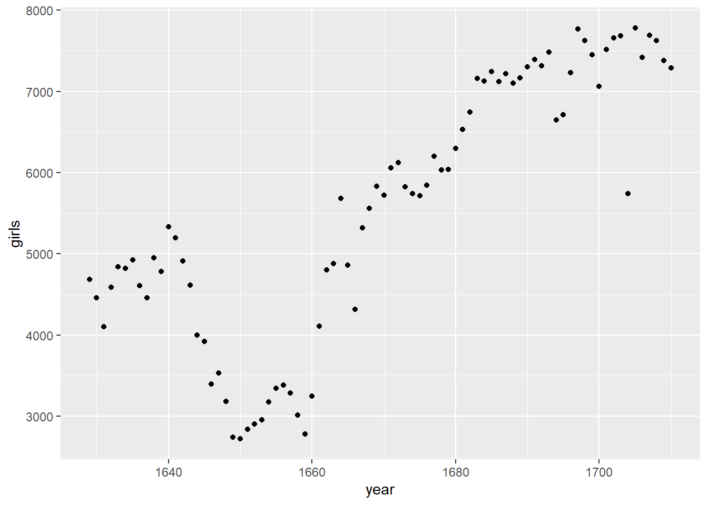
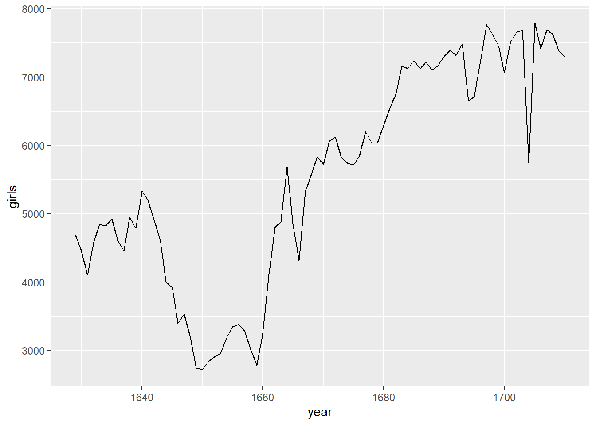
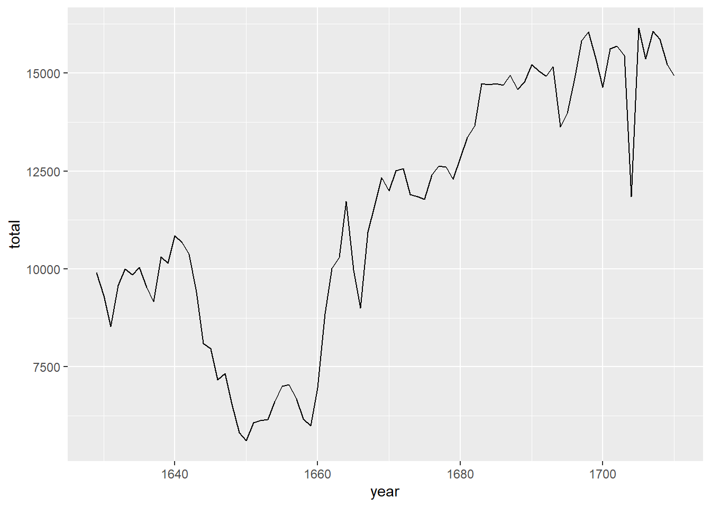
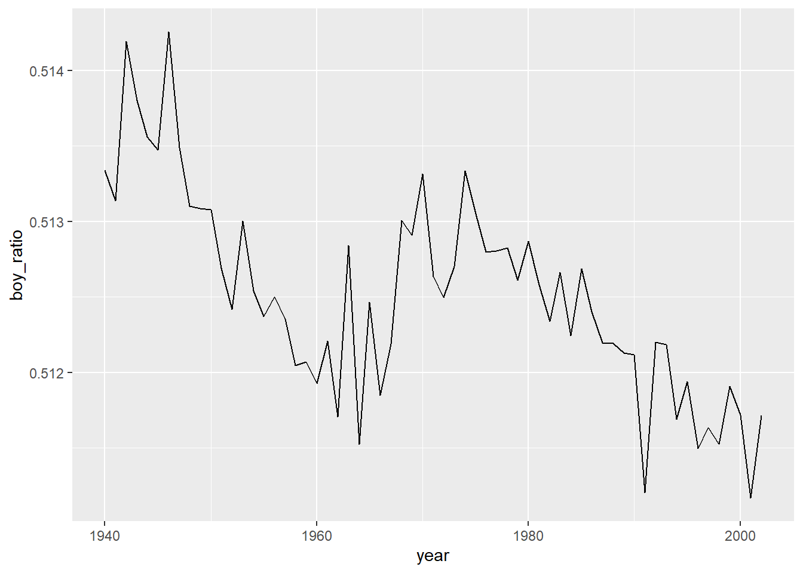
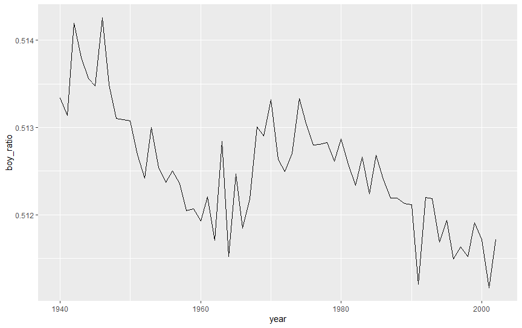

install.packages("tidyverse")
install.packages("openintro")Introduction to R and RStudio
The RStudio Interface
The goal of this lab is to introduce you to R and RStudio, which you’ll be using throughout the course both to learn the statistical concepts discussed in the course and to analyze real data and come to informed conclusions. To clarify which is which: R is the name of the programming language itself and RStudio is a convenient interface.
As the labs progress, you are encouraged to explore beyond what the labs dictate; a willingness to experiment will make you a much better programmer. Before we get to that stage, however, you need to build some basic fluency in R. Today we begin with the fundamental building blocks of R and RStudio: the interface, reading in data, and basic commands.
Go ahead and launch RStudio. You should see a window that looks like the image shown below.

The panel on the lower left is where the action happens. It’s called the console. Everytime you launch RStudio, it will have the same text at the top of the console telling you the version of R that you’re running. Below that information is the prompt. As its name suggests, this prompt is really a request: a request for a command. Initially, interacting with R is all about typing commands and interpreting the output. These commands and their syntax have evolved over decades (literally) and now provide what many users feel is a fairly natural way to access data and organize, describe, and invoke statistical computations.
The panel in the upper right contains your environment as well as a history of the commands that you’ve previously entered.
Any plots that you generate will show up in the panel in the lower right corner. This is also where you can browse your files, access help, manage packages, etc.
R Packages
R is an open-source programming language, meaning that users can contribute packages that make our lives easier, and we can use them for free. For this lab, and many others in the future, we will use the following R packages:
- The suite of tidyverse packages: for data wrangling and data visualization
- openintro: for data and custom functions with the OpenIntro resources
If these packages are not already available in your R environment, install them by typing the following three lines of code into the console of your RStudio session, pressing the enter/return key after each one.
Note that you can check to see which packages (and which versions) are installed by inspecting the Packages tab in the lower right panel of RStudio.
You may need to select a server from which to download; any of them will work. Next, you need to load these packages in your working environment. We do this with the library function. Run the following three lines in your console.
library(tidyverse)
library(openintro)You only need to install packages once, but you need to load them each time you relaunch RStudio.
The Tidyverse packages share common philosophies and are designed to work together. You can find more about the packages in the tidyverse at tidyverse.org.
Creating a reproducible lab report
We will be using R Markdown to create reproducible lab reports. See the following videos describing why and how:
Why use R Markdown for Lab Reports?
Using R Markdown for Lab Reports in RStudio
This file (with the .Rmd file extension) will serve as the lab report. You can just type your answers in this document instead of creating a separate document.
Going forward you should refrain from typing your code directly in the console, and instead type any code (final correct answer, or anything you’re just trying out) in the R Markdown file and run the chunk using either the Run button on the chunk (green sideways triangle) or by highlighting the code and clicking Run on the top right corner of the R Markdown editor. If at any point you need to start over, you can Run All Chunks above the chunk you’re working in by clicking on the down arrow in the code chunk.
Dr. Arbuthnot’s Baptism Records
To get started, let’s take a peek at the data.
data('arbuthnot', package='openintro')You can run the command by
- clicking on the green arrow at the top right of the code chunk in the R Markdown (Rmd) file, or
- putting your cursor on this line, and clicking the Run button on the upper right corner of the pane, or
- holding
Ctrl-Shift-Enter, or - typing the code in the console.
This command instructs R to load some data: the Arbuthnot baptism counts for boys and girls. You should see that the environment area in the upper righthand corner of the RStudio window now lists a data set called arbuthnot that has 82 observations on 3 variables. As you interact with R, you will create a series of objects. Sometimes you load them as we have done here, and sometimes you create them yourself as the byproduct of a computation or some analysis you have performed.
The Arbuthnot data set refers to the work of Dr. John Arbuthnot, an 18th century physician, writer, and mathematician. He was interested in the ratio of newborn boys to newborn girls, so he gathered the baptism records for children born in London for every year from 1629 to 1710. Once again, we can view the data by typing its name into the console.
arbuthnot# A tibble: 82 × 3
year boys girls
<int> <int> <int>
1 1629 5218 4683
2 1630 4858 4457
3 1631 4422 4102
4 1632 4994 4590
5 1633 5158 4839
6 1634 5035 4820
7 1635 5106 4928
8 1636 4917 4605
9 1637 4703 4457
10 1638 5359 4952
# ℹ 72 more rowsHowever, printing the whole dataset in the console is not that useful. One advantage of RStudio is that it comes with a built-in data viewer. Click on the name arbuthnot in the Environment pane (upper right window) that lists the objects in your environment. This will bring up an alternative display of the data set in the Data Viewer (upper left window). You can close the data viewer by clicking on the x in the upper left hand corner.
What you should see are four columns of numbers, each row representing a different year: the first entry in each row is simply the row number (an index we can use to access the data from individual years if we want), the second is the year, and the third and fourth are the numbers of boys and girls baptized that year, respectively. Use the scrollbar on the right side of the console window to examine the complete data set.
Note that the row numbers in the first column are not part of Arbuthnot’s data. R adds them as part of its printout to help you make visual comparisons. You can think of them as the index that you see on the left side of a spreadsheet. In fact, the comparison to a spreadsheet will generally be helpful. R has stored Arbuthnot’s data in a kind of spreadsheet or table called a data frame.
You can see the dimensions of this data frame as well as the names of the variables and the first few observations by typing:
glimpse(arbuthnot)Rows: 82
Columns: 3
$ year <int> 1629, 1630, 1631, 1632, 1633, 1634, 1635, 1636, 1637, 1638, 1639…
$ boys <int> 5218, 4858, 4422, 4994, 5158, 5035, 5106, 4917, 4703, 5359, 5366…
$ girls <int> 4683, 4457, 4102, 4590, 4839, 4820, 4928, 4605, 4457, 4952, 4784…It is better practice to type this command into your console, since it is not necessary code to include in your solution file.
This command should output the following
Rows: 82 Columns: 3 $ year
We can see that there are 82 observations and 3 variables in this dataset. The variable names are year, boys, and girls. At this point, you might notice that many of the commands in R look a lot like functions from math class; that is, invoking R commands means supplying a function with some number of arguments. The glimpse command, for example, took a single argument, the name of a data frame.
Some Exploration
Let’s start to examine the data a little more closely. We can access the data in a single column of a data frame separately using a command like
arbuthnot$boys [1] 5218 4858 4422 4994 5158 5035 5106 4917 4703 5359 5366 5518 5470 5460 4793
[16] 4107 4047 3768 3796 3363 3079 2890 3231 3220 3196 3441 3655 3668 3396 3157
[31] 3209 3724 4748 5216 5411 6041 5114 4678 5616 6073 6506 6278 6449 6443 6073
[46] 6113 6058 6552 6423 6568 6247 6548 6822 6909 7577 7575 7484 7575 7737 7487
[61] 7604 7909 7662 7602 7676 6985 7263 7632 8062 8426 7911 7578 8102 8031 7765
[76] 6113 8366 7952 8379 8239 7840 7640This command will only show the number of boys baptized each year. The dollar sign basically says “go to the data frame that comes before me, and find the variable that comes after me”.
- What command would you use to extract just the counts of girls baptized? Try it!
Insert your answer here
arbuthnot$girls [1] 4683 4457 4102 4590 4839 4820 4928 4605 4457 4952 4784 5332 5200 4910 4617
[16] 3997 3919 3395 3536 3181 2746 2722 2840 2908 2959 3179 3349 3382 3289 3013
[31] 2781 3247 4107 4803 4881 5681 4858 4319 5322 5560 5829 5719 6061 6120 5822
[46] 5738 5717 5847 6203 6033 6041 6299 6533 6744 7158 7127 7246 7119 7214 7101
[61] 7167 7302 7392 7316 7483 6647 6713 7229 7767 7626 7452 7061 7514 7656 7683
[76] 5738 7779 7417 7687 7623 7380 7288Notice that the way R has printed these data is different. When we looked at the complete data frame, we saw 82 rows, one on each line of the display. These data are no longer structured in a table with other variables, so they are displayed one right after another. Objects that print out in this way are called vectors; they represent a set of numbers. R has added numbers in [brackets] along the left side of the printout to indicate locations within the vector. For example, 5218 follows [1], indicating that 5218 is the first entry in the vector. And if [43] starts a line, then that would mean the first number on that line would represent the 43rd entry in the vector.
Data visualization
R has some powerful functions for making graphics. We can create a simple plot of the number of girls baptized per year with the command
ggplot(data = arbuthnot, aes(x = year, y = girls)) +
geom_point()
We use the ggplot() function to build plots. If you run the plotting code in your console, you should see the plot appear under the Plots tab of the lower right panel of RStudio. Notice that the command above again looks like a function, this time with arguments separated by commas.
With ggplot():
- The first argument is always the dataset.
- Next, you provide the variables from the dataset to be assigned to
aesthetic elements of the plot, e.g. the x and the y axes. - Finally, you use another layer, separated by a
+to specify thegeometric object for the plot. Since we want to scatterplot, we usegeom_point().
For instance, if you wanted to visualize the above plot using a line graph, you would replace geom_point() with geom_line().
ggplot(data = arbuthnot, aes(x = year, y = girls)) +
geom_line()
You might wonder how you are supposed to know the syntax for the ggplot function. Thankfully, R documents all of its functions extensively. To learn what a function does and its arguments that are available to you, just type in a question mark followed by the name of the function that you’re interested in.
Try the following in your console:
?ggplotNotice that the help file replaces the plot in the lower right panel. You can toggle between plots and help files using the tabs at the top of that panel.
- Is there an apparent trend in the number of girls baptized over the years? How would you describe it? (To ensure that your lab report is comprehensive, be sure to include the code needed to make the plot as well as your written interpretation.)
Using the code below:
ggplot(data = arbuthnot, aes(x = year, y = girls)) + geom_line()
It could be clearly seen in the graph that a low point was hit in the late 1650s and has been steadily increasing ever since.
R as a big calculator
Now, suppose we want to plot the total number of baptisms. To compute this, we could use the fact that R is really just a big calculator. We can type in mathematical expressions like
5218 + 4683[1] 9901to see the total number of baptisms in 1629. We could repeat this once for each year, but there is a faster way. If we add the vector for baptisms for boys to that of girls, R will compute all sums simultaneously.
arbuthnot$boys + arbuthnot$girls [1] 9901 9315 8524 9584 9997 9855 10034 9522 9160 10311 10150 10850
[13] 10670 10370 9410 8104 7966 7163 7332 6544 5825 5612 6071 6128
[25] 6155 6620 7004 7050 6685 6170 5990 6971 8855 10019 10292 11722
[37] 9972 8997 10938 11633 12335 11997 12510 12563 11895 11851 11775 12399
[49] 12626 12601 12288 12847 13355 13653 14735 14702 14730 14694 14951 14588
[61] 14771 15211 15054 14918 15159 13632 13976 14861 15829 16052 15363 14639
[73] 15616 15687 15448 11851 16145 15369 16066 15862 15220 14928What you will see are 82 numbers (in that packed display, because we aren’t looking at a data frame here), each one representing the sum we’re after. Take a look at a few of them and verify that they are right.
Adding a new variable to the data frame
We’ll be using this new vector to generate some plots, so we’ll want to save it as a permanent column in our data frame.
arbuthnot <- arbuthnot %>%
mutate(total = boys + girls)The %>% operator is called the piping operator. It takes the output of the previous expression and pipes it into the first argument of the function in the following one. To continue our analogy with mathematical functions, x %>% f(y) is equivalent to f(x, y).
A note on piping: Note that we can read these two lines of code as the following:
“Take the arbuthnot dataset and pipe it into the mutate function. Mutate the arbuthnot data set by creating a new variable called total that is the sum of the variables called boys and girls. Then assign the resulting dataset to the object called arbuthnot, i.e. overwrite the old arbuthnot dataset with the new one containing the new variable.”
This is equivalent to going through each row and adding up the boys and girls counts for that year and recording that value in a new column called total.
Where is the new variable? When you make changes to variables in your dataset, click on the name of the dataset again to update it in the data viewer.
You’ll see that there is now a new column called total that has been tacked onto the data frame. The special symbol <- performs an assignment, taking the output of one line of code and saving it into an object in your environment. In this case, you already have an object called arbuthnot, so this command updatesthat data set with the new mutated column.
You can make a line plot of the total number of baptisms per year with the command
ggplot(data = arbuthnot, aes(x = year, y = total)) +
geom_line()
Similarly to you we computed the total number of births, you can compute the ratio of the number of boys to the number of girls baptized in 1629 with
5218 / 4683[1] 1.114243or you can act on the complete columns with the expression
arbuthnot <- arbuthnot %>%
mutate(boy_to_girl_ratio = boys / girls)You can also compute the proportion of newborns that are boys in 1629
5218 / (5218 + 4683)[1] 0.5270175or you can compute this for all years simultaneously and append it to the dataset
arbuthnot <- arbuthnot %>%
mutate(boy_ratio = boys / total)Note that we are using the new total variable we created earlier in our calculations.
- Now, generate a plot of the proportion of boys born over time. What do you see?
Insert your answer here
ggplot(data = arbuthnot, aes(x = year, y = boy_ratio)) +
geom_line()
What is apparent from the graph is that there really isn’t any observable trend with the ratio of boys being baptized from 1629 to 1710.
Tip: If you use the up and down arrow keys, you can scroll through your previous commands, your so-called command history. You can also access it by clicking on the history tab in the upper right panel. This will save you a lot of typing in the future.
Finally, in addition to simple mathematical operators like subtraction and division, you can ask R to make comparisons like greater than, >, less than, <, and equality, ==. For example, we can ask if the number of births of boys outnumber that of girls in each year with the expression
arbuthnot <- arbuthnot %>%
mutate(more_boys = boys > girls)This command adds a new variable to the arbuthnot data frame containing the values of either TRUE if that year had more boys than girls, or FALSE if that year did not (the answer may surprise you). This variable contains a different kind of data than we have encountered so far. All other columns in the arbuthnot data frame have values that are numerical (the year, the number of boys and girls). Here, we’ve asked R to create logical data, data where the values are either TRUE or FALSE. In general, data analysis will involve many different kinds of data types, and one reason for using R is that it is able to represent and compute with many of them.
More Practice
In the previous few pages, you recreated some of the displays and preliminary analysis of Arbuthnot’s baptism data. Your assignment involves repeating these steps, but for present day birth records in the United States. The data are stored in a data frame called present.
data('present', package='openintro')To find the minimum and maximum values of columns, you can use the functions min and max within a summarize() call, which you will learn more about in the following lab. Here’s an example of how to find the minimum and maximum amount of boy births in a year:
arbuthnot %>%
summarize(min = min(boys), max = max(boys))# A tibble: 1 × 2
min max
<int> <int>
1 2890 8426- What years are included in this data set? What are the dimensions of the data frame? What are the variable (column) names?
Insert your answer here
summarize(present)# A tibble: 1 × 0range(present$year)[1] 1940 2002years included in this data go from 1940 to 2002
names(present)[1] "year" "boys" "girls"Column names are “year”, “boys”, “girls”
dim(present)[1] 63 3Dimensions of the data is 63 rows by 3 columns
- How do these counts compare to Arbuthnot’s? Are they of a similar magnitude?
Insert your answer here
Arbuthnot had 19 more rows, however the number columns match what is in present.
Make a plot that displays the proportion of boys born over time. What do you see? Does Arbuthnot’s observation about boys being born in greater proportion than girls hold up in the U.S.? Include the plot in your response. Hint: You should be able to reuse your code from Exercise 3 above, just replace the dataframe name.
present <- present %>% mutate(total = boys + girls)present <- present %>% mutate(boy_ratio = boys / total)ggplot(data = present, aes(x = year, y = boy_ratio)) + geom_line()

After observing the plot above and comparing it with the arbuthnot, I can conclude that boys are born in greater proportion than girls even in the US. However, it is on a downward trend whereas in arbuthnot, there was no trend, as previously mentioned.
Insert your answer here
- In what year did we see the most total number of births in the U.S.? Hint: First calculate the totals and save it as a new variable. Then, sort your dataset in descending order based on the total column. You can do this interactively in the data viewer by clicking on the arrows next to the variable names. To include the sorted result in your report you will need to use two new functions:
arrange(for sorting). We can arrange the data in a descending order with another function:desc(for descending order). The sample code is provided below.
present %>%
arrange(desc(total))# A tibble: 63 × 5
year boys girls total boy_ratio
<dbl> <dbl> <dbl> <dbl> <dbl>
1 1961 2186274 2082052 4268326 0.512
2 1960 2179708 2078142 4257850 0.512
3 1957 2179960 2074824 4254784 0.512
4 1959 2173638 2071158 4244796 0.512
5 1958 2152546 2051266 4203812 0.512
6 1962 2132466 2034896 4167362 0.512
7 1956 2133588 2029502 4163090 0.513
8 1990 2129495 2028717 4158212 0.512
9 1991 2101518 2009389 4110907 0.511
10 1963 2101632 1996388 4098020 0.513
# ℹ 53 more rowsInsert your answer here
The year with the most total number of births in the U.S. is in 1961.
These data come from reports by the Centers for Disease Control. You can learn more about them by bringing up the help file using the command ?present.
Resources for learning R and working in RStudio
That was a short introduction to R and RStudio, but we will provide you with more functions and a more complete sense of the language as the course progresses.
In this course we will be using the suite of R packages from the tidyverse. The book R For Data Science by Grolemund and Wickham is a fantastic resource for data analysis in R with the tidyverse. If you are googling for R code, make sureto also include these package names in your search query. For example, instead of googling “scatterplot in R”, google “scatterplot in R with the tidyverse”.
These cheatsheets may come in handy throughout the semester:
- RMarkdown cheatsheet
- Data transformation cheatsheet
- Data visualization cheatsheet
- More cheatsheets
- Note that some of the code on these cheatsheets may be too advanced for this course. However the majority of it will become useful throughout the semester.